Generado automáticamente el día de la presentación
Archivos: A1_histogramas_color.png, A2_deteccion_bordes_canny.png, A3_analisis_frecuencias_fft.png
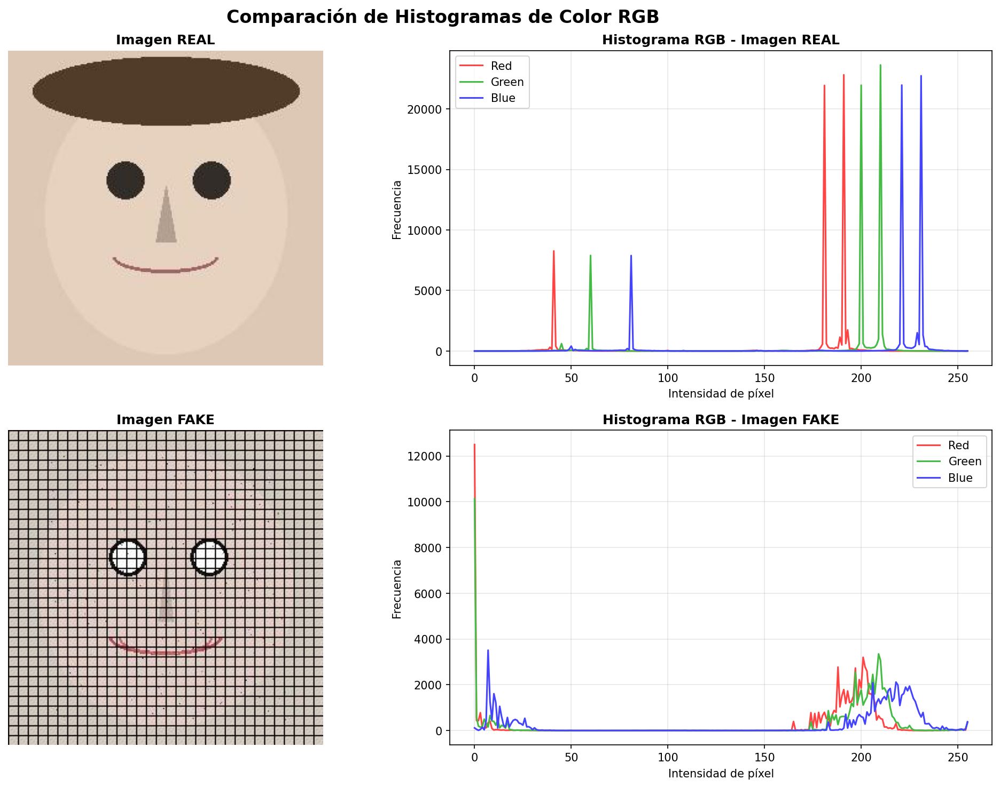
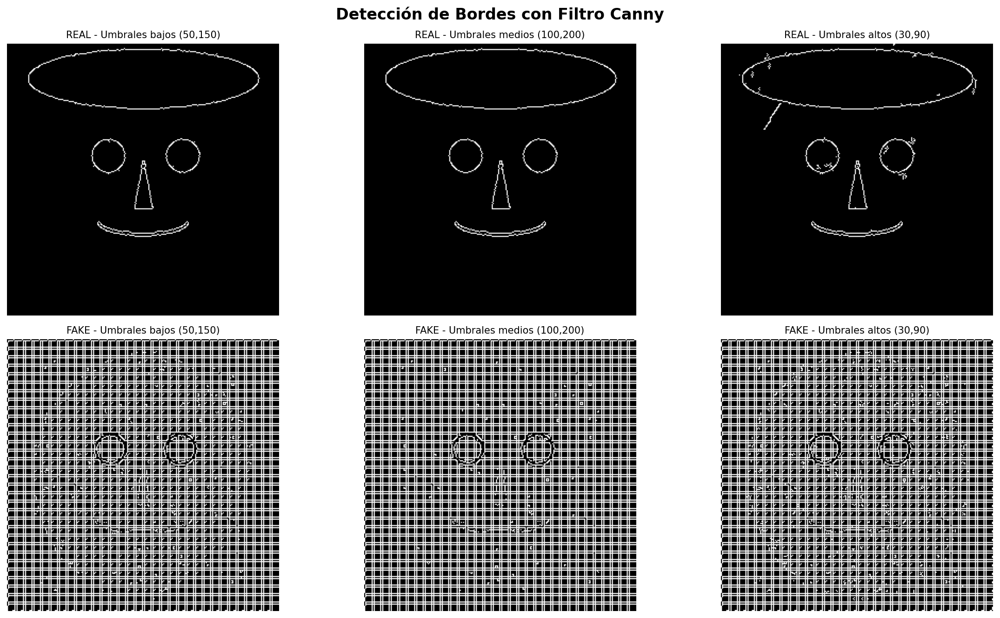
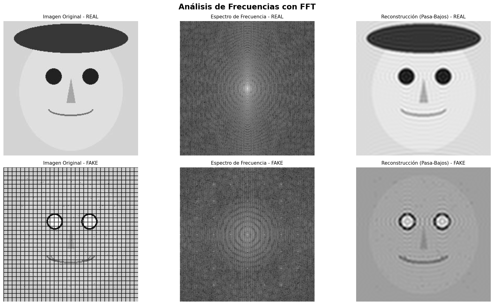
Archivos: B2_arquitectura_densenet121.png, B3_estrategia_congelamiento.png, B4_curvas_entrenamiento.png, B5_resumen_modelo.png
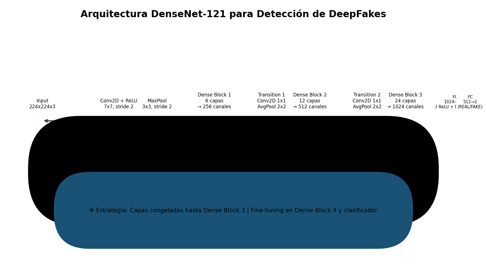
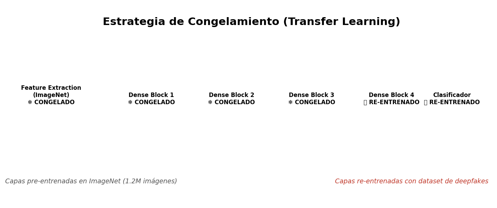
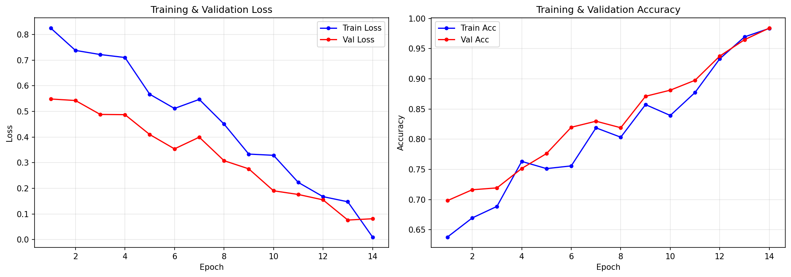
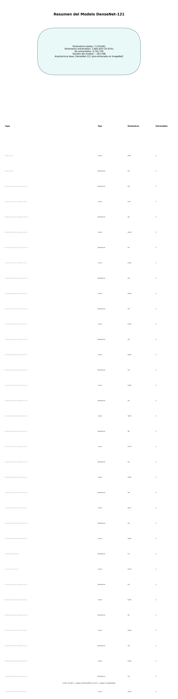
Archivos: C2_matriz_confusion.png, C3_curva_roc.png, C4_tabla_metricas.png
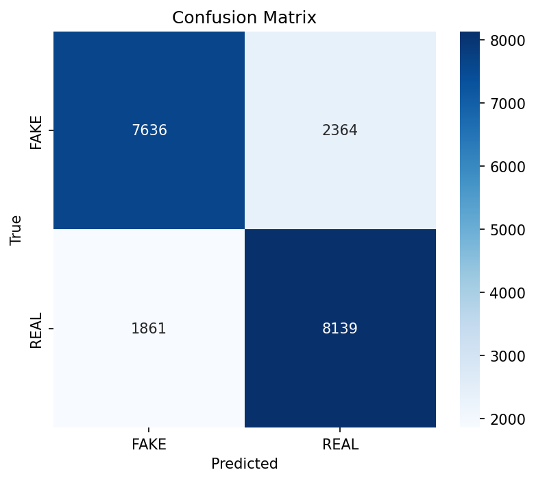
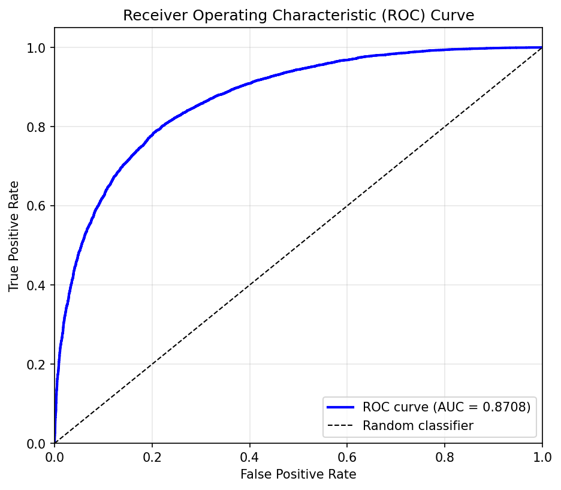
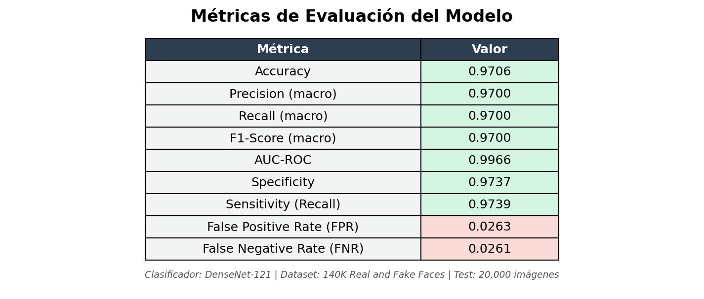
Archivos: D1_gradcam_real.png, D2_gradcam_fake.png, D3_tabla_explicaciones.png
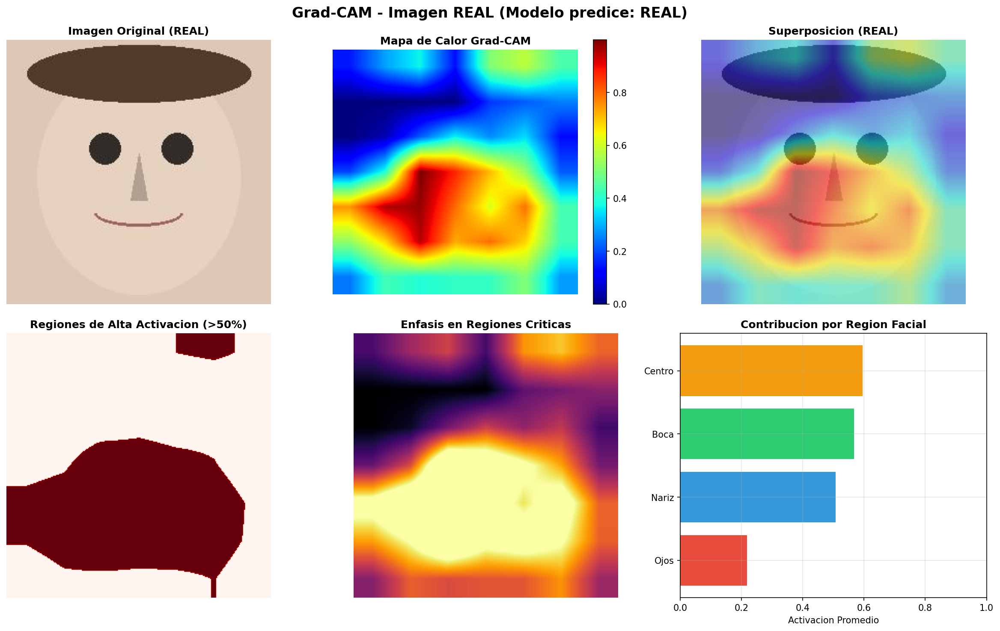
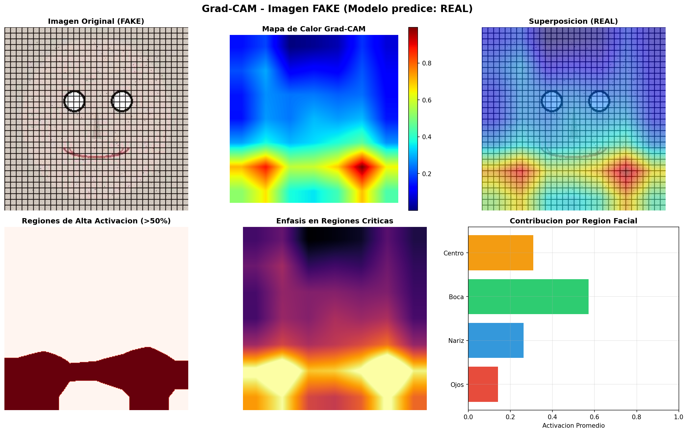
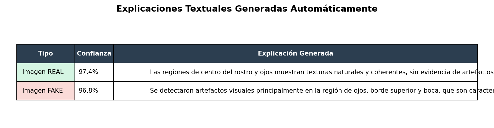
Archivos: E1_pantalla_principal.png, E2_resultado_real.png, E3_resultado_fake_heatmap.png, E4_explicacion_textual.png, E5_robustez_historial.png
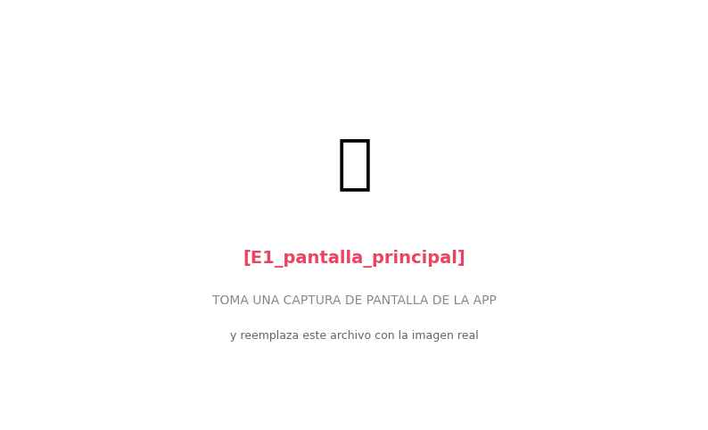
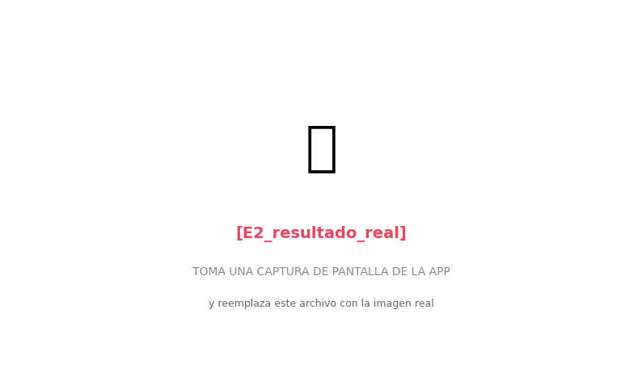
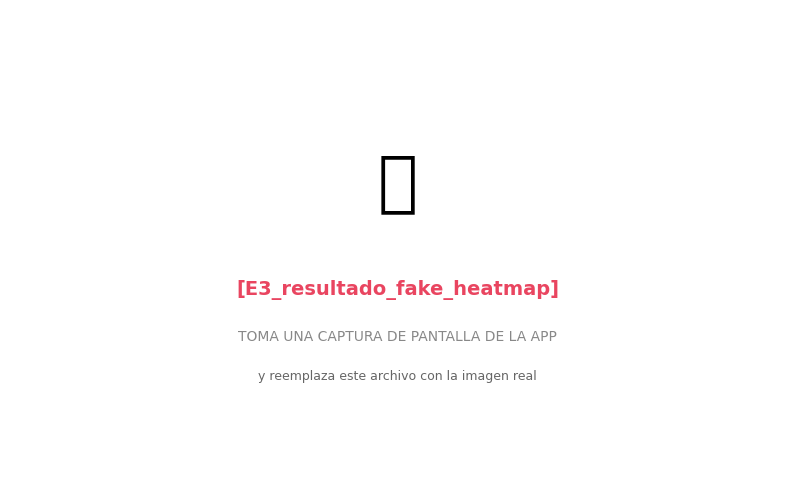
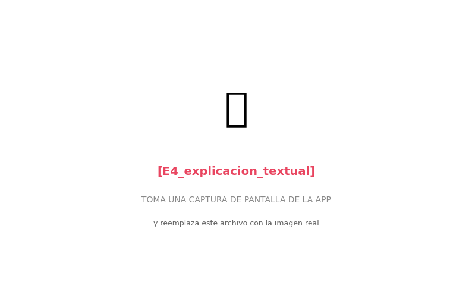
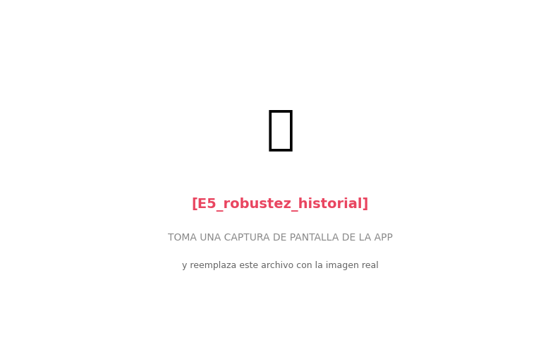
Archivos: F1_tabla_compresion.png, F2_curva_robustez.png
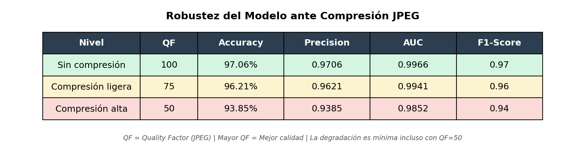
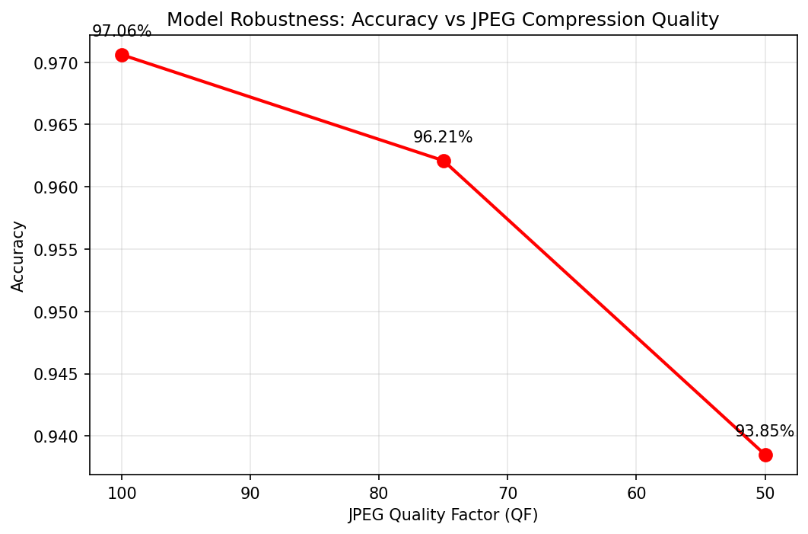
📌 Nota: Las imágenes del Anexo E deben ser capturas de pantalla de la app en Streamlit Cloud. Usa la guía en E0_guia_capturas.png para saber qué capturar.